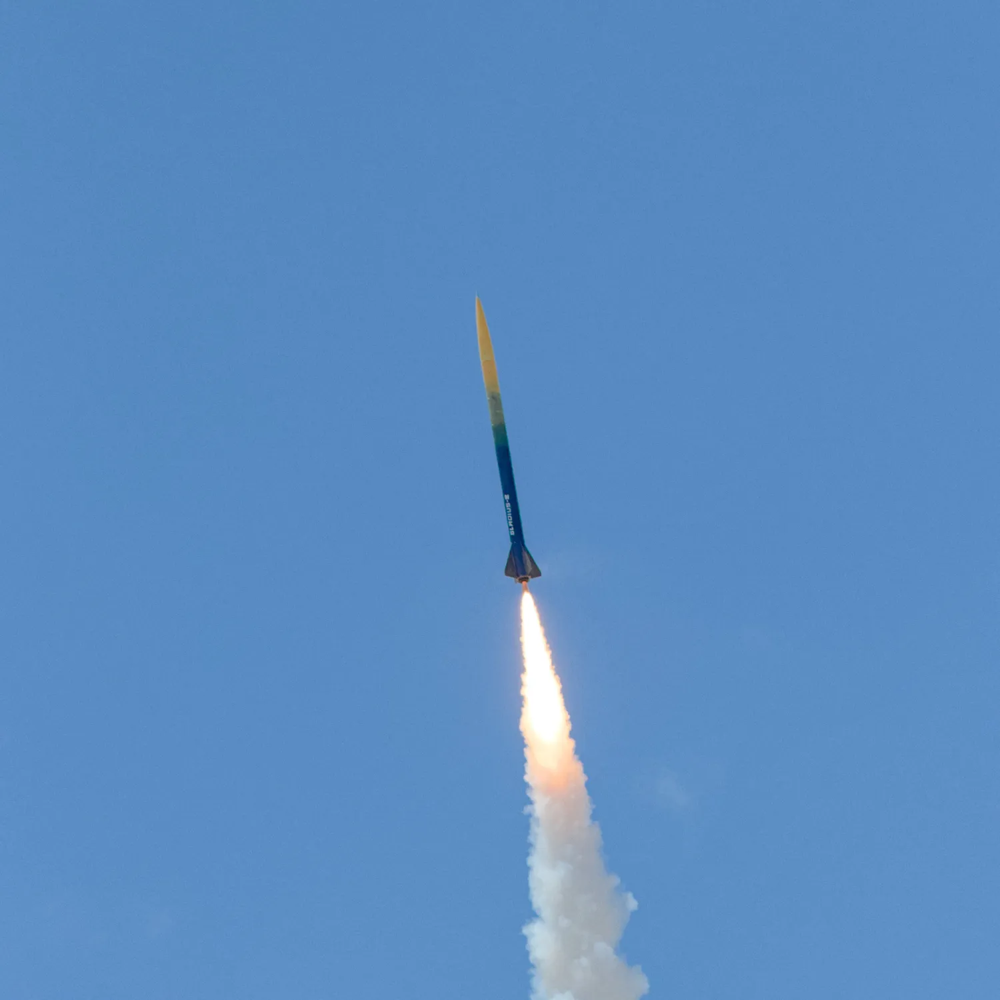
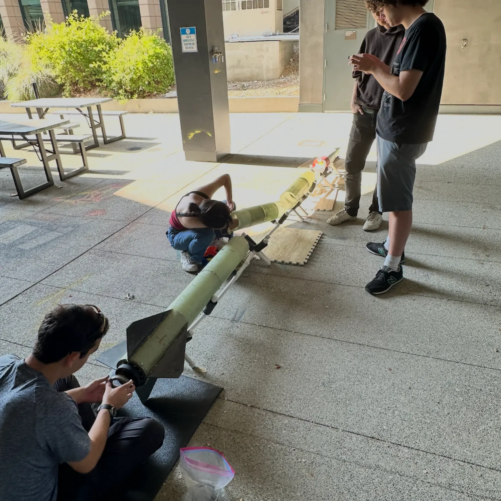
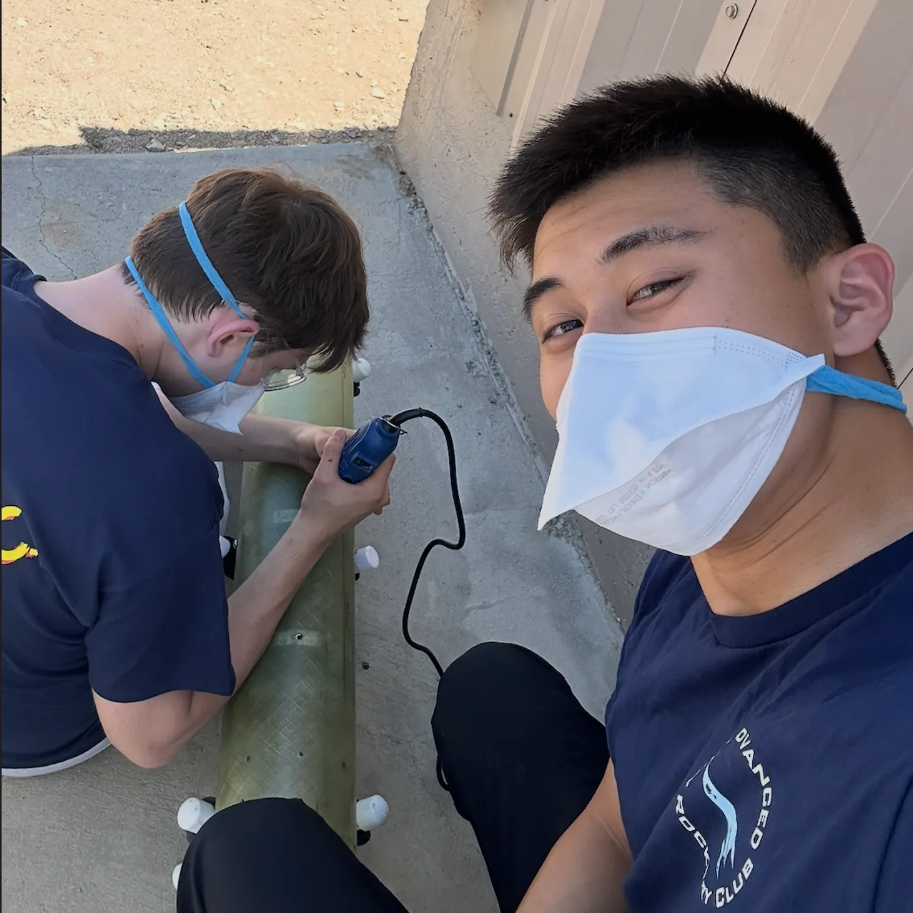
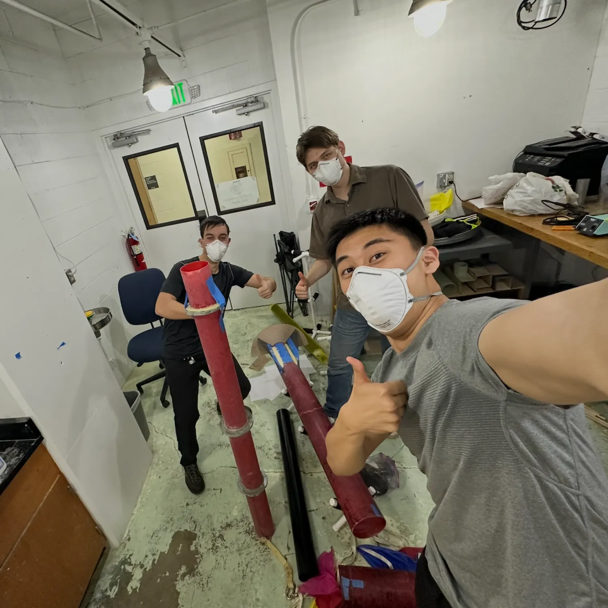
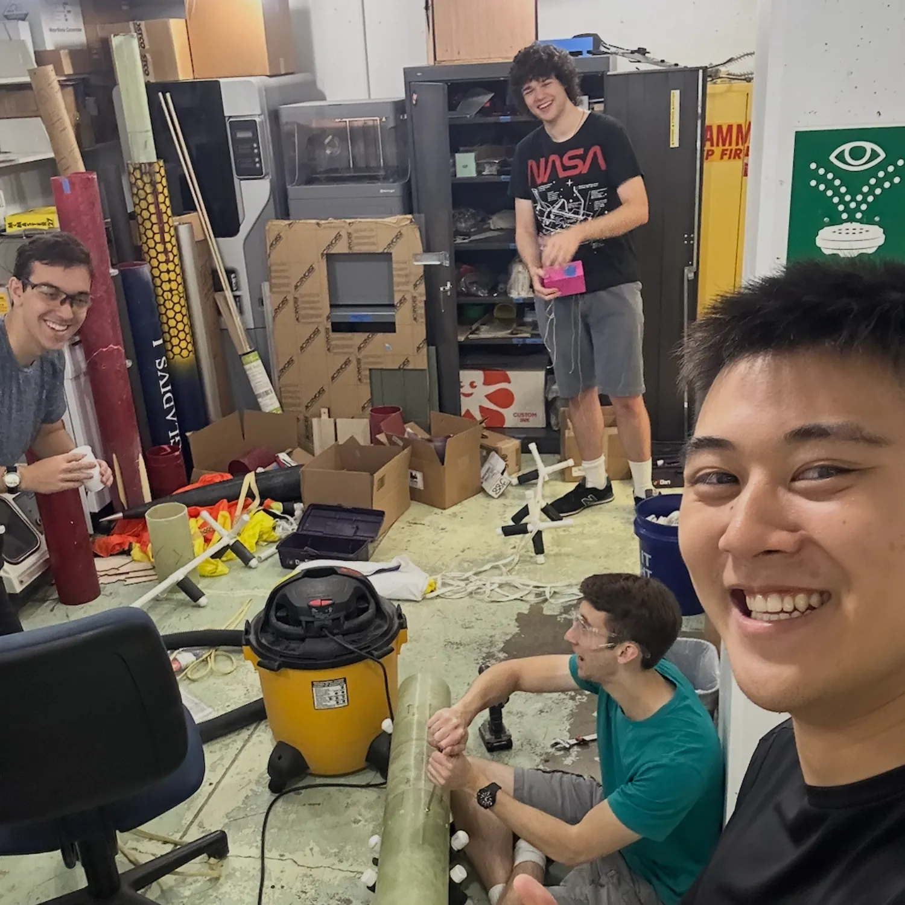
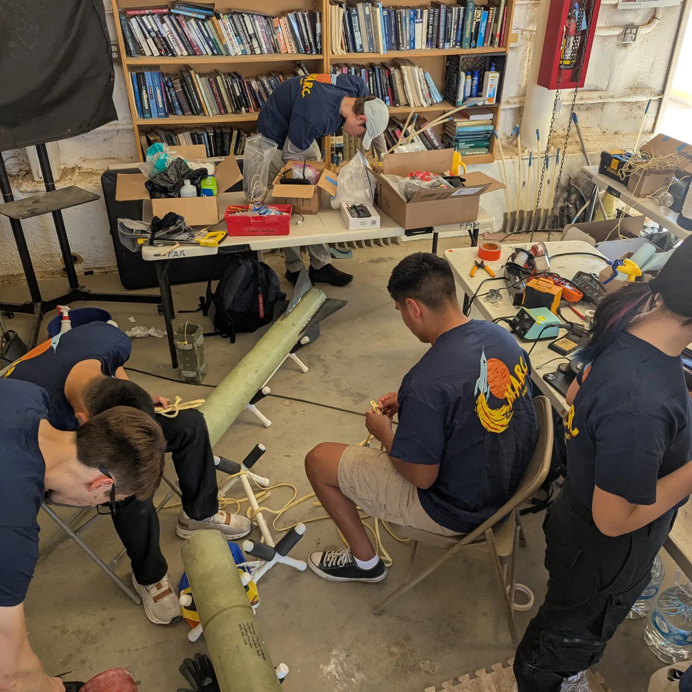
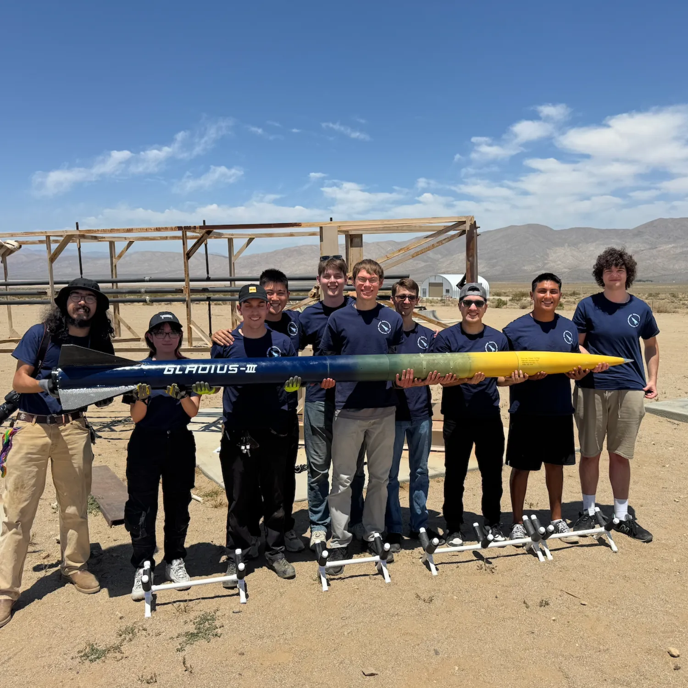
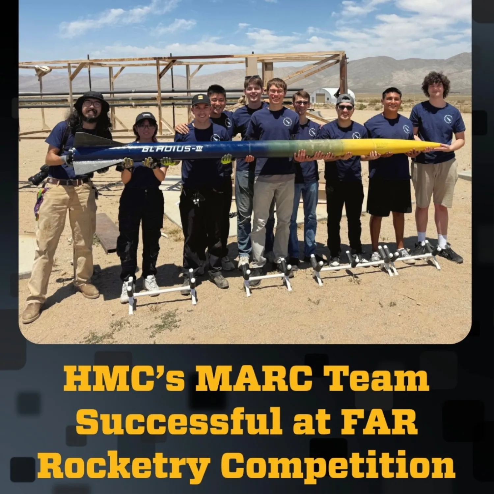
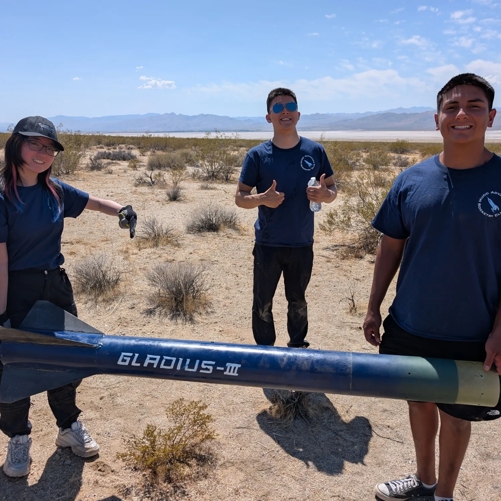

Overview
Contributed to structures subteam for Gladius III, an 11-foot, 70-pound competition rocket competing at FAR-Unlimited. Innovated cap-style centering rings, extended shock cords with double fisherman knots, and integrated water ballast system for precision altitude control. Led epoxy preparation and structural fixes during competition weekend.
Achieved 99.95% accuracy (17,172 ft vs 17,181 ft target) — the most accurate rocket in competition history — earning 3rd place nationally, Most Improved Team Award, and Highest Accuracy Award. Broke Harvey Mudd altitude and accuracy records, establishing MARC as a credible national competitor after prior failures.
Photo Gallery








Record-Breaking Performance
Most accurate in competition history
vs 17,181 ft target (9 ft difference)
FAR-Unlimited Competition
Most Improved + Highest Accuracy
Technical Contributions
Cap-Style Centering Rings
Innovated new centering ring design to improve structural integrity and alignment of internal components, ensuring stable flight dynamics throughout ascent and descent phases.
Extended Shock Cord System
Designed and implemented extended shock cords using double fisherman knots, providing reliable connection between rocket sections during separation and parachute deployment.
Water Ballast Integration
Integrated water ballast system for precise altitude control, enabling the team to fine-tune rocket mass and achieve unprecedented accuracy within 9 feet of target altitude.
Competition Epoxy Work
Led epoxy preparation and structural fixes during competition weekend, executing critical repairs under pressure using Aeropoxy and Proline 4500 to ensure launch readiness.
Rocket Specifications
Gladius III represents a significant engineering achievement for Harvey Mudd College's rocketry program. The 11-foot, 70-pound rocket was designed for the FAR-Unlimited competition, which challenges teams to achieve precise altitude targets while demonstrating robust recovery systems and structural integrity.
- Length: 11 feet
- Weight: 70 pounds
- Target Altitude: 17,181 feet AGL
- Achieved Altitude: 17,172 feet AGL (99.95% accuracy)
- Simulation Tools: OpenRocket for flight dynamics, SolidWorks FEA for structural analysis
- Manufacturing: Waterjet cutter for precision components, hand layup for composite structures
- Adhesives: Aeropoxy and Proline 4500 for structural bonding
Team Achievement
This performance marked a turning point for Mudd Advanced Rocketry (MARC), establishing the team as a credible national competitor after previous setbacks. The achievement broke Harvey Mudd school records for both altitude and accuracy, demonstrating the team's technical capability and commitment to excellence.
The 3rd place national finish, combined with Most Improved Team and Highest Accuracy awards, validated MARC's design decisions and rigorous testing approach. The team's success showcased the integration of simulation-driven design, precision manufacturing, and careful competition execution.